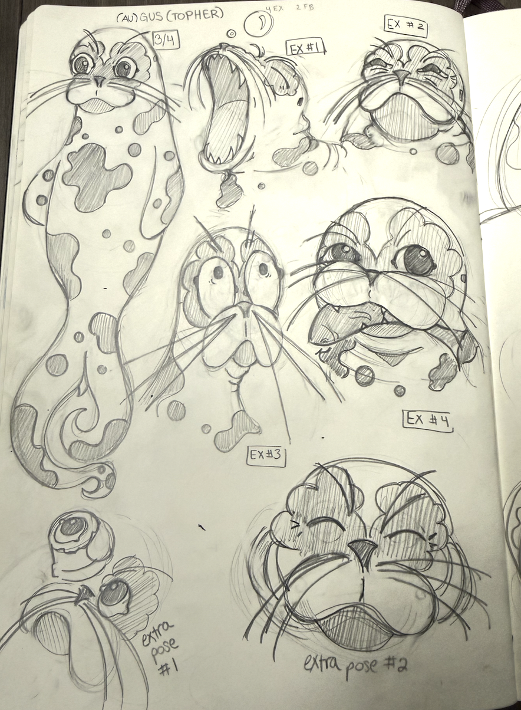
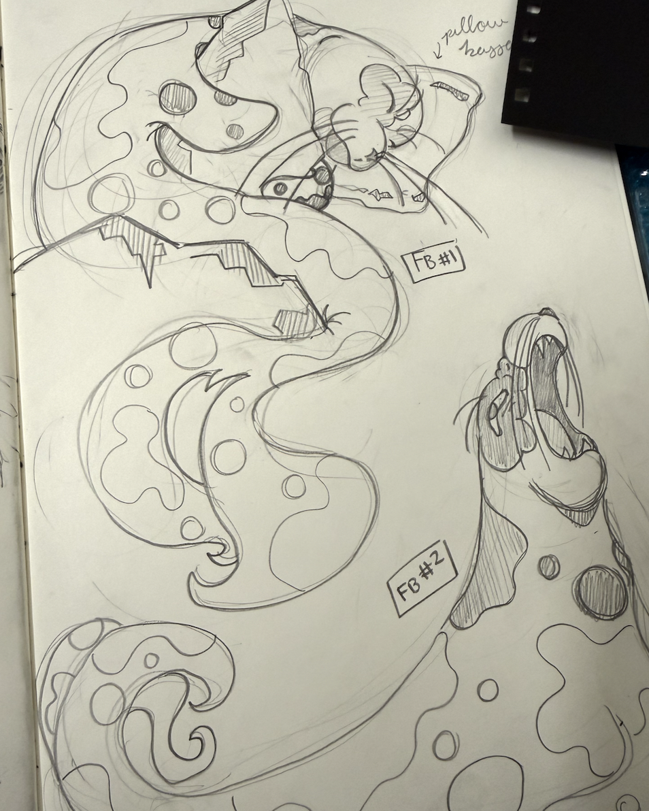

Medusa — Space Punk Lesbian Romance
Concept art, character and spaceship/little guy design for a school project where we recreated the story of Medusa as a space punk lesbian romance.
Medusa — Space Punk Lesbian Romance
Concept art, character and spaceship/little guy design for a school project where we recreated the story of Medusa as a space punk lesbian romance.
Medusa — Space Punk Lesbian Romance
Concept art, character and spaceship/little guy design for a school project where we recreated the story of Medusa as a space punk lesbian romance.
Medusa — Space Punk Lesbian Romance
Presenting the final art for the Medusa project, in the Norris Cinema Theater.

Seal Character
Concept art for a character I designed for a character design class, of a pacific harbor seal

Seal Character
Concept art for a character I designed for a character design class, of a pacific harbor seal
Vocaloid Character
Concept art for a group project where we designed an original vocaloid character.
Vocaloid Character
Concept art for a group project where we designed an original vocaloid character.
Vocaloid Character
Concept art for a group project where we designed an original vocaloid character.

Autistic Vampire Webseries
Characters from a webseries I plan on creating, about the way autistic people are often portrayed as stereotypical monsters and how many autistic traits mesh well with vampire qualities.
Cinderella as a Knight — Facial Expressions
Facial expression sheets for my Cinderella-as-a-knight character, all hand inked.
Granny Smith, Drag Queen Boxer
Need I say more?
Wood Magic — Original Story
Two character sheets for an original story about a world where magic is infused into wood.
Wood Magic — Original Story
Two character sheets for an original story about a world where magic is infused into wood.
Jia — From Fairy Godmother to Main Character
A character I created originally as a fairy godmother for my Cinderella story, but who had too much main character energy and needed a story — or video game — of her own.